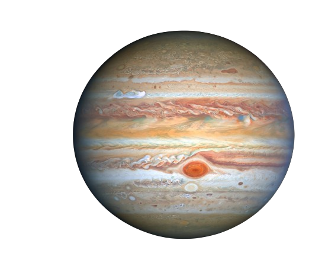
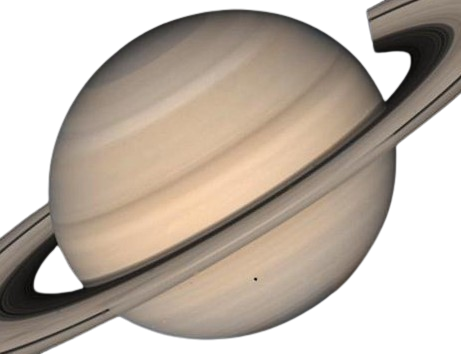
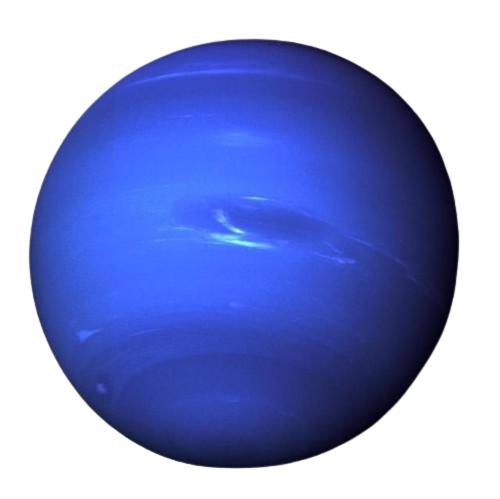
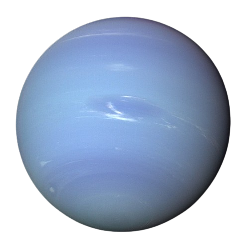

Jupiter is the (largest in the Solar System).
Jupiter:
Largest Planet: Jupiter is the largest planet in our solar system, with a diameter over 11 times that of Earth. It has a strong magnetic field and more than 75 known moons.
Great Red Spot: Jupiter is known for its Great Red Spot, a massive storm that has been raging for at least 350 years. The spot is larger than Earth and is a high-pressure system.
Rapid Rotation: Jupiter has a very short day, rotating on its axis in just under 10 hours. This rapid rotation causes the planet to have an oblate shape, flattened at the poles and bulging at the equator.

Saturn is the (second largest in the Solar System).
Saturn:
Dazzling Rings: Saturn is famous for its stunning ring system, which consists of a series of concentric rings made up of ice and rock particles. These rings are one of the most iconic features of the solar system.
Many Moons: Saturn has a large number of moons, with over 80 identified so far. Titan, Saturn's largest moon, is known for having a thick atmosphere and liquid methane lakes.
Low Density: Despite its enormous size, Saturn has a lower average density than water, which means it would float if placed in a giant bathtub.

Uranus ( The Ice Giant)
Uranus:
Sideways Rotation: Uranus is unique among the planets in our solar system because it rotates on its side. Its axis of rotation is tilted at an angle of about 98 degrees relative to its orbit around the Sun.
Faint Rings: Uranus has a system of faint rings, which were discovered in 1977. Unlike the prominent rings of Saturn, Uranus's rings are narrow and dark.
Extreme Seasons: Due to its extreme axial tilt, Uranus experiences extreme seasons. Each pole experiences 42 years of continuous sunlight followed by 42 years of darkness.

Neptune (The Invisible Planet)
Neptune: is not visible to the naked eye.
Dynamic Atmosphere: Neptune has a dynamic and active atmosphere with fast winds and large storms. The most famous storm on Neptune is the Great Dark Spot, a large anticyclonic storm similar to Jupiter's Great Red Spot.
Triton: Neptune's largest moon, Triton, is unique among the large moons in the solar system because it has a retrograde orbit, meaning it orbits Neptune in the opposite direction of the planet's rotation.
Farthest from the Sun: Neptune is the eighth and farthest planet from the Sun. It takes about 165 Earth years to complete one orbit around the Sun.
